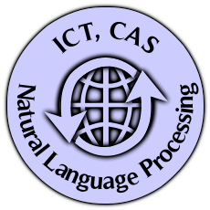

Zheng Daqi (郑 达奇)
3nd-year Ph.D. CandidateInstitute of Computing Technology
Chinese Academy of Science
Contact Information
| Email: | |
| Address: | No.6 Kexueyuan South Road Zhongguancun, Haidian District, Beijing,China 100190 |
| Phone: | |
| GTalk: | zhengdaqi |
| Mendeley: |
Research
I am a member of the Natural Language Processing (NLP) group at ICT working with Professor Liu Qun. My research focuses on machine translation.
My specific research interest lies in finding better way to capture the human-like translation method.
Beyond Academics
Links
My colleague
Thank John DeNero